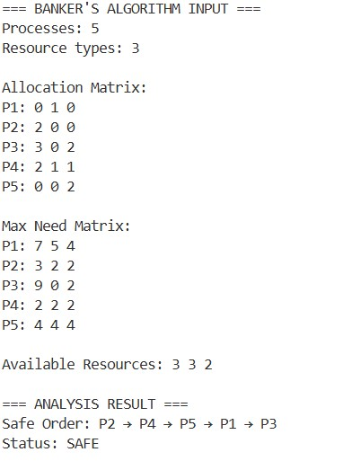
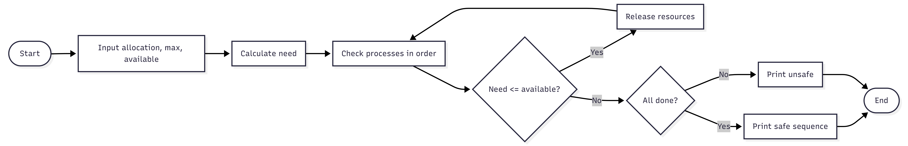

Lab Overview
In this lab, I applied the Banker's Algorithm to analyse system safety for five processes and three resource types. I manually checked safe states under different available resource values (R1=10, then 12; R2=5, then 7) and explained the safe execution order. Finally, I implemented the algorithm in C# to take user inputs and output whether the system is in a safe state.
Task: Banker’s Algorithm – Manual Safety Analysis
System Configuration
Five processes (P1 to P5) compete for three resource types (R1, R2, R3). The table below shows each process’s maximum required resources.
| Process | R1 | R2 | R3 |
|---|---|---|---|
| P1 | 7 | 5 | 4 |
| P2 | 3 | 2 | 2 |
| P3 | 9 | 0 | 2 |
| P4 | 2 | 2 | 2 |
| P5 | 4 | 4 | 4 |
Assumed Allocation and Available Resources
The following allocation matrix and initial available resources are used for this analysis.
Currently Allocated Resources:
| Process | R1 | R2 | R3 |
|---|---|---|---|
| P1 | 0 | 1 | 0 |
| P2 | 2 | 0 | 0 |
| P3 | 3 | 0 | 2 |
| P4 | 2 | 1 | 1 |
| P5 | 0 | 0 | 2 |
Initially Available: R1 = 3, R2 = 3, R3 = 2
Step 1: Build the Need Matrix
The remaining need for each process is computed as:
Need = Maximum - Allocation
| Process | R1 | R2 | R3 |
|---|---|---|---|
| P1 | 7 | 4 | 4 |
| P2 | 1 | 2 | 2 |
| P3 | 6 | 0 | 0 |
| P4 | 0 | 1 | 1 |
| P5 | 4 | 4 | 2 |
Step 2: Find a Safe Execution Order
Start with the work vector equal to the initial available resources: Work = (3, 3, 2)
- Round 1 – Select P2: P2’s need (1, 2, 2) is less than or equal to Work (3, 3, 2) → proceed. Release P2’s allocation (2, 0, 0). New Work = (3+2, 3+0, 2+0) = (5, 3, 2). Completed: P2
- Round 2 – Select P3: P3 needs (6, 0, 0) ≤ (5, 3, 2) → proceed. Release (3, 0, 2). New Work = (5+3, 3+0, 2+2) = (8, 3, 4). Completed: P2, P3
- Round 3 – Select P4: P4 needs (0, 1, 1) ≤ (8, 3, 4) → proceed. Release (2, 1, 1). New Work = (8+2, 3+1, 4+1) = (10, 4, 5). Completed: P2, P3, P4
- Round 4 – Select P5: P5 needs (4, 4, 2) ≤ (10, 4, 5) → proceed. Release (0, 0, 2). New Work = (10+0, 4+0, 5+2) = (10, 4, 7). Completed: P2, P3, P4, P5
- Round 5 – Select P1: P1 needs (7, 4, 4) ≤ (10, 4, 7) → proceed. Release (0, 1, 0). New Work = (10+0, 4+1, 7+0) = (10, 5, 7). Completed: P2, P3, P4, P5, P1
Final Result: The system is in a safe state — no deadlock will occur. A valid safe execution sequence is: P2 → P3 → P4 → P5 → P1
Task: Increased Available Resources
The system now has more resources available. The updated availability vector is: Available = (12, 5, 7)
The need matrix (derived earlier from Max – Allocation) remains the same:
| Process | R1 | R2 | R3 |
|---|---|---|---|
| P1 | 7 | 4 | 4 |
| P2 | 1 | 2 | 2 |
| P3 | 6 | 0 | 0 |
| P4 | 0 | 1 | 1 |
| P5 | 4 | 4 | 2 |
Finding a Safe Sequence with the New Resources:
Initial work vector = Available = (12, 5, 7)
- Step 1 – Run P4: Check if need (0, 1, 1) ≤ (12, 5, 7) → Yes. P4 finishes and returns its allocated resources (2, 1, 1). Work becomes: (12+2, 5+1, 7+1) = (14, 6, 8). Completed: P4
- Step 2 – Run P2: Need (1, 2, 2) ≤ (14, 6, 8) → Yes. P2 releases (2, 0, 0). New work: (14+2, 6+0, 8+0) = (16, 6, 8). Completed: P4, P2
- Step 3 – Run P3: Need (6, 0, 0) ≤ (16, 6, 8) → Yes. P3 releases (3, 0, 2). New work: (16+3, 6+0, 8+2) = (19, 6, 10). Completed: P4, P2, P3
- Step 4 – Run P5: Need (4, 4, 2) ≤ (19, 6, 10) → Yes. P5 releases (0, 0, 2). New work: (19+0, 6+0, 10+2) = (19, 6, 12). Completed: P4, P2, P3, P5
- Step 5 – Run P1: Need (7, 4, 4) ≤ (19, 6, 12) → Yes. P1 releases (0, 1, 0). New work: (19+0, 6+1, 12+0) = (19, 7, 12). Completed: P4, P2, P3, P5, P1
Final Outcome: The system remains in a safe state after the resource increase. One possible safe execution order is: P4 → P2 → P3 → P5 → P1
Task: Another Resource Increase
The available resources have been raised again to: Available = (12, 7, 7)
The need matrix stays the same, as maximum demands and allocations have not changed:
| Process | R1 | R2 | R3 |
|---|---|---|---|
| P1 | 7 | 4 | 4 |
| P2 | 1 | 2 | 2 |
| P3 | 6 | 0 | 0 |
| P4 | 0 | 1 | 1 |
| P5 | 4 | 4 | 2 |
Determining a Safe Order Under the New Resources:
Initial work vector = (12, 7, 7)
- Round 1 – P4: Need (0, 1, 1) ≤ (12, 7, 7) → eligible. After finishing, P4 gives back (2, 1, 1). Work updates to: (12+2, 7+1, 7+1) = (14, 8, 8). Completed: P4
- Round 2 – P2: Need (1, 2, 2) ≤ (14, 8, 8) → eligible. P2 releases (2, 0, 0). Work becomes: (14+2, 8+0, 8+0) = (16, 8, 8). Completed: P4, P2
- Round 3 – P3: Need (6, 0, 0) ≤ (16, 8, 8) → eligible. P3 releases (3, 0, 2). Work becomes: (16+3, 8+0, 8+2) = (19, 8, 10). Completed: P4, P2, P3
- Round 4 – P1: Need (7, 4, 4) ≤ (19, 8, 10) → eligible. P1 releases (0, 1, 0). Work becomes: (19+0, 8+1, 10+0) = (19, 9, 10). Completed: P4, P2, P3, P1
- Round 5 – P5: Need (4, 4, 2) ≤ (19, 9, 10) → eligible. P5 releases (0, 0, 2). Work becomes: (19+0, 9+0, 10+2) = (19, 9, 12). Completed: P4, P2, P3, P1, P5
Final Conclusion: The system remains in a safe state after this additional resource increase. One valid safe execution sequence is: P4 → P2 → P3 → P1 → P5
Banker’s code
I developed a C# code that computes the need matrix, determines whether a safe process execution order exists, and then either displays the safe sequence or reports that the system is in an unsafe state.


corresponding code
// C# Implementation Logic
bool[] finish = new bool[n];
int[] safeSequence = new int[n];
int[] work = (int[])available.Clone();
int count = 0;
while (count < n) {
bool found = false;
for (int p = 0; p < n; p++) {
if (!finish[p]) {
bool canAllocate = true;
for (int r = 0; r < m; r++) {
if (need[p, r] > work[r]) {
canAllocate = false;
break;
}
}
if (canAllocate) {
for (int r = 0; r < m; r++) work[r] += allocation[p, r];
safeSequence[count++] = p;
finish[p] = true;
found = true;
}
}
}
if (!found) break;
}